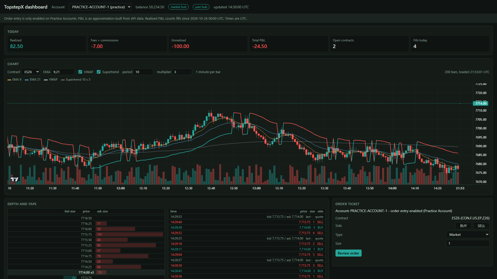

One prompt. A working dashboard for the TopstepX API.
Open Claude Code on your own computer, paste the prompt below, and the kit installs itself, verifies your credentials without ever seeing them in the chat, pulls your first live data, and opens a local dashboard: charts with indicators, a DOM you can trade from, live quotes, and a Practice-only order ticket. Then ask for whatever you want to build next.
View on GitHub Read the READMESet up the TopstepX API starter kit for me. Clone https://github.com/thelton-cmd/topstepx-api-starter.git, open the folder, read AGENTS.md, and follow its "First-time setup" steps. Tell me when I need to do something myself, and never ask me to paste my API key into this chat.

How the setup goes
- You need Python 3.10 or newer, Claude Code (desktop app or terminal) or another coding agent, and a TopstepX account with the API Access subscription. A free Practice Account is where the order ticket works.
- The agent clones the kit, creates a virtual environment, installs the package, and runs the offline test suite.
- You type your username and API key into the
.envfile yourself. The key never passes through the chat, and the kit never prints it. - The agent runs the setup checker, fetches your first bars, streams quotes for a few seconds, and starts the dashboard in your browser.
- Then you build. "Add a 2-hour chart for NQ." "Alert me when ES crosses the number I type." "Export today's fills to CSV every evening." The kit ships 25 copy-paste prompts to start from.
What's inside
A small Python package
Auth with automatic token refresh, every REST endpoint as a five-line method, and both real-time SignalR hubs with reconnect and resubscribe. Offline tests with a mocked API.
Numbered examples
From "check my setup" through contract search, bars, quotes, depth, account events, charting, a trade journal and a risk monitor with your own limits.
The local dashboard
Chart with on-demand history and an indicators menu, click-to-trade DOM with your working orders, tape, account dropdown, fills plotted on the chart, and a Practice-only order ticket with the confirmation style you choose.
See the API call
A panel that shows the exact REST request and response, or hub message, behind what you just did, with copy-as-curl and copy-as-Python. Every click is a lesson.
Record and replay
Save the live stream and play it back at speed into the whole dashboard, for practice and for testing outside market hours.
Indicator plugins and Pine Script
Drop a Python file into a folder and it appears in the chart menu. Paste a Pine Script indicator and get that Python file generated for you.
Alerts and your own guardrails
Price alerts you set, fill notifications, and a daily loss number or contract cap of your own that pauses order entry on the dashboard.
Journal and session stats
Fills paired into round trips, per-day and per-contract figures, a weekday-by-hour heatmap, excursion from 1-minute bars, CSV export.
Built for agents
An AGENTS.md with ground rules the agent follows: run on your device, never handle your key, never place an order unless you ask, never invent a trading rule.